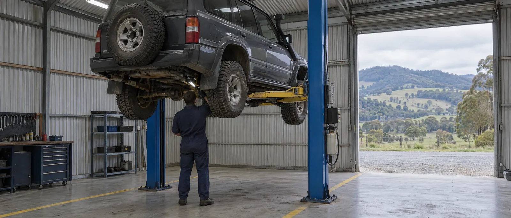

Cars, 4WDs, caravans and trailers, serviced in Legana.
A locally owned workshop in the West Tamar for servicing, repairs, roadworthies and parts, all under one roof.

Bookings, quotes and parts enquiries
(03) 6330 1447What we do
All services-
Servicing and logbook servicing
Scheduled servicing to the manufacturer's logbook, so your new-car warranty stays intact.
-
Roadworthy inspections
We're a licensed AIS inspection station and can supply the paperwork to register your vehicle in Tasmania.
-
Brakes, suspension and exhaust
Inspections, repairs and replacement parts for the systems that keep you safe and comfortable.
-
Tyres and wheel alignments
Tyre sales, puncture repairs and alignments to stop uneven wear.
-
Batteries and auto electrical
Century batteries supplied and fitted, plus fault finding on electrical systems.
-
Parts counter
Spare parts, Penrite oils, spark plugs and batteries, over the counter.
Roadworthy and registration, done here
Buying a vehicle from interstate, or re-registering one that's been off the road? As an approved inspection station we can inspect it, fix anything that needs fixing, and give you the paperwork for registration, without sending you to another workshop.
- AIS Inspection StationLicensed to carry out vehicle inspections in Tasmania
- TACC Accredited RepairerMember of the Tasmanian Automobile Chamber of Commerce
- RACT Roadside AgentLocal roadside assistance for RACT members
Find us on Legana Park Drive
We're in the Legana industrial estate, just off the West Tamar Highway. We can also pick up and drop off vehicles around Legana.
- Address
- 2 Legana Park Drive
Legana TAS 7277
Get directions - Opening hours
- Monday to Friday
8 am to 5 pm
Closed weekends - Phone and email
- (03) 6330 1447
serviceandspares@bigpond.com